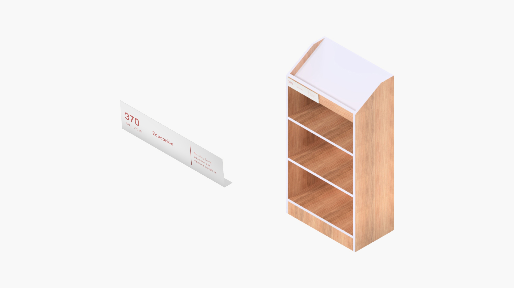

El presente documento es un breve instructivo para funcionarios y bibliotecarios de la Pontificia Universidad Católica de Valparaíso para realizar por su propia cuenta la señalización en los estantes de libro que yacen en cada una de las sedes bibliotecarias.
La idea del presente instructivo es cuidar la sostenibilidad gráfica y material de esta señalización destinada tanto para estudiantes como para los funcionarios, apoyando así la buena búsqueda y encuentro de los libros.
A partir de este mismo documento se pueden generar las señalizaciones necesarias de manera remota y en impresoras de fácil acceso.
La señalización destinada para los estantes se compone por dos elementos:
Idealmente usar papel Bond de 180 gramos tamaño carta. En caso de no ser posible, pueden utilizarse hojas de resma, tamaño carta (21,6x27,9) cms.
La siguiente imagen, es una representación esquemática de este tipo de señalización, indicando en primer lugar la placa de plástico con la papeleta por detrás, y en segundo lugar, mostrando la señal completa ubicada en la estantería.
La información presentada en esta señalización está basada en el Sistema de Clasificación Decimal Dewey. Utilizando así, de forma genérica, el número del concepto, el concepto mismo y sus respectivas derivaciones según aplique para cada Biblioteca de la Universidad.

Nota: De izquierda a Derecha. Los números correspondientes indican el Concepto General y las Subcategorías (serie de números que se encuentran en los estantes). Consiguientemente se presenta el Concepto General y por último se muestran los términos o Subcategorías del Concepto General. Todos los elementos están alineados de forma vertical.
Se sugiere leer los siguientes detalles técnicos de diseño para no perjudicar el formato de la señalización:

Otras sugerencias para no afectar la elaboración de las papeletas: